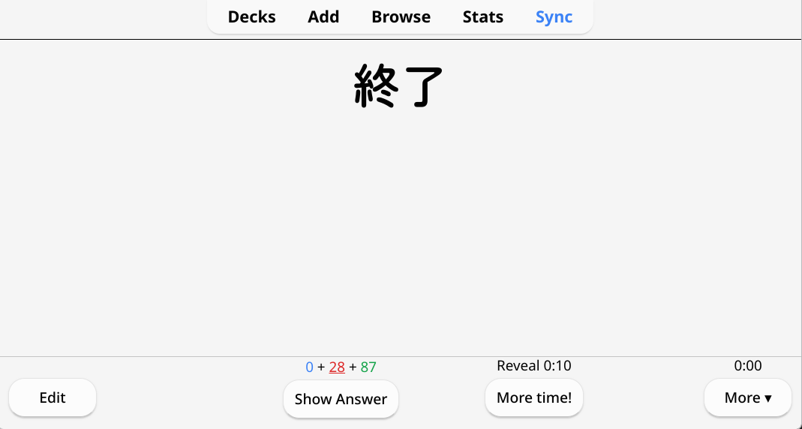
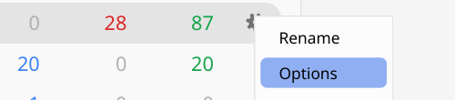
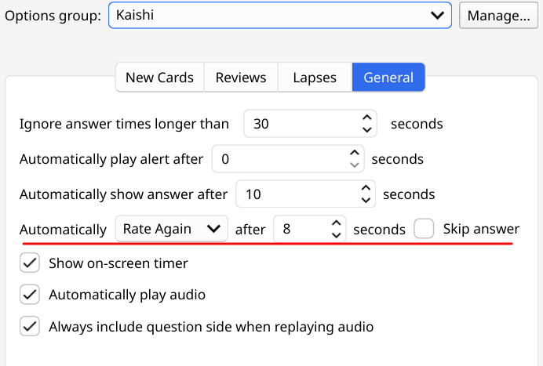

Notes on Learning Japanese
This page documents things I wish I knew when I started learning Japanese, or that I've found myself explaining to others repeatedly. It's intended as a supplement to the Immersion-Based Japanese Learning guide, which I recommend at least skimming first if you're unfamiliar.
I am by no means an expert; I do not intend to speak authoritatively on anything other than my personal experience. I strongly encourage you to evaluate everything for yourself.
For now, sections are presented in no particular order.
§ Anki: Initial setup
The instructions below streamline the Anki setup from the Immersion-Based Japanese Learning guide, producing an identical configuration (other than the addition of Speed Focus Mode).
Downloads & Installation
- Download the Anki installer for your platform (or use your package manager if you are on Linux).
- Download the
.apkgfile for the latest Kaishi 1.5k release. - Run through the Anki installer.
- Open Anki, and drag the
.apkgfile you downloaded into the Anki window. - The import window will appear, simply hit the "Import" button in the top right.
- Then, you will be presented with a summary of the notes added, which you can close.
Add-ons
Navigate to Tools → Add-ons in the menu bar, then click Get Add-ons in the top right, and copy and paste the following text in all at once:
874215009 2055492159 757527607 291119185 385888438 759844606 301910299 1610304449 738807903 876946123 266436365 1771074083 1046608507 1247171202 1779060522 580654285 1045800357 200813220 1898445115Then click OK, and restart Anki.
Preferences
- Navigate to Tools → Preferences in the menu bar.
- In the Review tab, set Next day starts at to 7 hours past midnight, and set Learn ahead limit to 999 minutes.
- Then, close the preferences window.
Deck settings
Click Kaishi 1.5k to open the deck overview page. Then click the Options button at the bottom, and change the following settings:
-
Daily limits
- Maximum reviews/day:
9999
- Maximum reviews/day:
-
New cards
- Learning steps:
1m 5m 1h
- Learning steps:
-
Lapses
- Relearning steps:
3m - Leech threshold:
6 - Leech action: Suspend
- Relearning steps:
-
Display order
- New/review order: Show after reviews
- Interday learning/review order: Show after reviews
-
FSRS
- Enable FSRS: On (no further changes needed)
-
Timers
- Maximum review seconds:
30
- Maximum review seconds:
Then click Save in the top right.
Now, Shift-click the same Options button to open the legacy options menu. Then, navigate to the General tab and set the following values:
- Automatically show answer after 10 seconds
- Automatically Rate again after 8 seconds
Then click OK.
§ Anki: FSRS
FSRS (Free Spaced Repetition Scheduler) is a modern scheduling algorithm designed to replace SM-2, Anki's current default. Using it is straightforward as long as you remember the following:
- There is no practical reason to prefer the SM-2 scheduler. FSRS reduces your workload and resolves numerous well-documented issues with SM-2 at no real cost.
- FSRS is opt-in, meaning you must enable it yourself (at least as of September 2026).
- The 90% retention default will serve you well; I strongly encourage you to direct your attention to something more productive.
- Never rate a card anything other than Again/Fail unless you successfully recall all of the target information. FSRS can adapt to almost any rating habit, as long as it follows that rule. If you are not using the Pass/Fail plugin, it's important to understand that Hard is still only intended for when you recall all of the target information. (source)
-
The optimization feature enables FSRS to train its parameters on your review history to model your memory more accurately.
- Even without optimization, the default parameters will outperform SM-2. (source, no longer updated but remains true)
- The Anki manual states that optimizing monthly is sufficient. (source)
- There's no penalty for over-optimizing; the once-a-month recommendation is simply based on diminishing returns. If there isn't enough data to improve the model, you'll be notified that "The FSRS parameters currently appear to be optimal." Personally, I find it easier to optimize more frequently than necessary, instead of maintaining a monthly schedule.
- Keep "Reschedule cards on change" disabled. Though it may sound useful, in practice there are very few situations that warrant its use, especially in the context of Japanese self-study with FSRS already enabled. (further reading)
You may (rightfully) wonder: "If FSRS is apparently so much better, why isn't it the default, and why doesn't it automatically optimize?" While both sound like trivial improvements, in practice they are harder to implement than you might anticipate. These concerns are intended to be addressed in the future; you can follow their progress here:
§ Anki: Review pace & the Speed Focus Mode plugin
Lowering your average time per card allows you to review more content in the same amount of time, or spend less time in Anki, freeing up time for immersion and making your daily study less of a chore. You can view your pace for today's session by opening the Stats screen, and looking for the "Studied X cards in Y today (Z.Zs/card)" line in the first section.
I suggest aiming to keep your pace under 10 seconds per card. For context, I average between 4 to 6 seconds per card, but you shouldn't force yourself to match that. It is counterproductive to force a faster pace; once you manage below 10 seconds/card, further progression will come with time, even without conscious effort to improve your pace. Your pace will also naturally fluctuate based on your ratio of new and review cards, mental state, and overall experience with Japanese vocab recognition.
It's important to understand that aiming for a faster pace does not come at the cost of worse retention, even if it feels like you fail more often. Spending 20 to 30 seconds on a single card is not productive, even if the target information feels like it's on the tip of your tongue, or as the Anki developers put it:
It's okay if it takes you a little while to recall the answer, but as a general rule if you can't answer within about 10 seconds, it's probably better to move on and show the answer than keep struggling to remember.
In the time you might spend lingering on one card, you could have failed it after 5 seconds, let FSRS schedule it appropriately, and reviewed several other cards you're more familiar with. Have faith that marking a card as failed doesn't reset your progress, so "protecting" cards is counterproductive.
Of course, you can try to manage your pace solely through discipline, but stalling also frequently occurs from simply spacing out. This is why I strongly recommend the Speed Focus Mode plugin.
With my configuration, the plugin operates in the following manner:
- When a card appears, a 10-second timer begins. If the countdown hits zero, the card flips.
- Once the card is flipped, an 8-second countdown starts. If you do not rate the card before time runs out, it automatically rates it as a fail.
- Pressing p (or clicking "More time!") stops the countdown until you manually flip or rate the card.

The benefits of this plugin stem from passive awareness of time pressure, which helps to maintain focus and requires less attention to manage pacing. Furthermore, the need to pause adds enough friction to AltTab to improve focus. From my own experimentation and feedback from others who use the plugin, setting the timer lower than 10 seconds is not particularly useful and often hurts more than it helps, as your pace will improve with time. Similarly, it's not a failure to use the pause feature for a bit more time on a card, as long as your overall pace is good.
If you step away without pausing and the card automatically flips, then I suggest pressing - to bury it if it's a card you've seen prior to today, and rating the card as a fail otherwise. You may have to use CtrlZ to return to the previous card(s) if it advanced several times.
The plugin has a handful of quirks, though it works fine in practice. I intend to fork the plugin in the future, but for now the main hurdle is that it is configured through the "classic deck settings menu," accessed by clicking the gear next to the deck and Shift-clicking the Options menu entry.

After doing so, navigating to the General tab will show you the plugin configuration:

These are my preferred defaults. Note that the option underlined in red controls the action and countdown on the back of the card. A countdown for the back of the card might seem superfluous at first, but it's easy to spend more time than you intend on the back, and it affects your pace the same as time spent on the front.
It's worth noting that Anki has a built-in auto-advance feature, but it's much less useful than the plugin. The built-in version must be re-enabled every study session, and there is no "pause the timer for this card" feature, only an overall toggle for auto-advance.
§ Anki: Regularity of demonstratives
While studying Kaishi 1.5k, you will encounter the family of words below, known as demonstratives. Rather than memorizing them in isolation, it's much simpler to learn the pattern they follow: the prefix indicates relative distance or asks a question, while the suffix determines whether you are referring to a thing, place, direction, or manner.
There are nuances with how demonstratives are used in practice, such as the abstract notion of distance, but there's no point in worrying about them until you cover them in your grammar resource. Similarly, don't memorize this chart upfront; awareness of the pattern is enough to support you when studying through Anki.
| Question | Near speaker | Near listener | Far from both |
|---|---|---|---|
| どれ which, what |
これ this |
それ that |
あれ that over there |
| どの which one |
この this one |
その that one |
あの that one there |
| どこ where |
ここ here |
そこ there |
あそこ† over there |
| どう how, what |
こう in this manner, this kind of |
そう in such manner, that way |
ああ*† like that |
| どんな what kind of |
こんな* this kind of |
そんな* that kind of |
あんな* that kind of |
| どちら which |
こちら here, this way |
そちら there, that way |
あちら* there, that way |
| * Not present in Kaishi 1.5k † Irregular |
|||